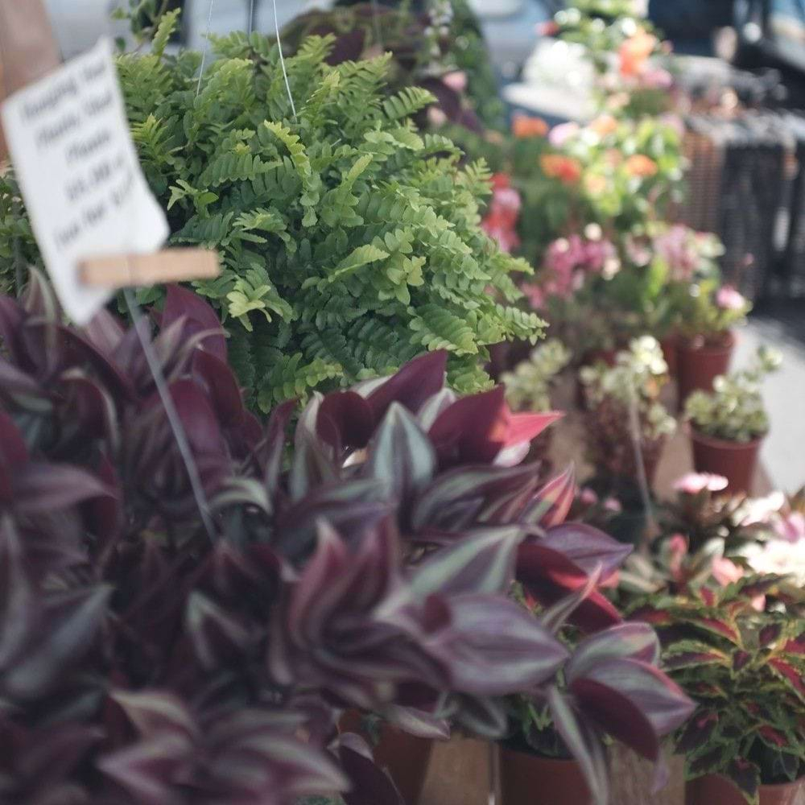

Market Details
- Day & Time: Saturday, 8:00 AM – 12:30 PM
- Location: 42000 Main St, Temecula, CA 92590
- Season: Year-round
- Market Manager: Mary Scott
- Contact: (951) 694-6450
- Certified by: Riverside County Agricultural Commissioner
About This Market
The Old Town Temecula Farmers Market is a vibrant Saturday market nestled in the heart of Old Town Temecula. Local farmers and artisans gather each week to offer fresh produce, handmade goods, and local specialties.
What You'll Find
Seasonal Produce
Locally grown fruits and vegetables in season.
Artisan Foods
Handmade breads, jams, and more from local artisans.
Visitor Tips
Best Time to Visit
Early mornings are best to find the freshest items.
Parking
Free street parking is available in Old Town Temecula.